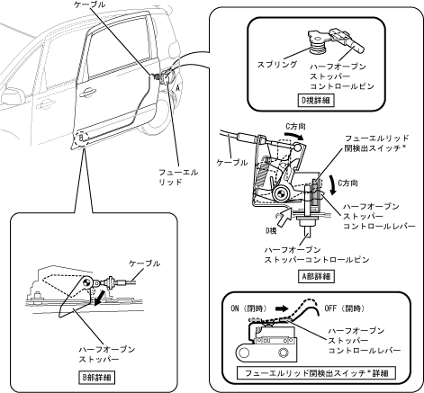

| フューエルリッドインターロック |
| ● |
フューエルリッドが開いているときに，ロワーローラーガイド側のハーフオープンストッパーを作動させることにより，スライドドア側のロワーローラーブラケットと干渉させ，左側のスライドドアがフューエルリッドに干渉する位置まで開かないよう規制しています。またこのとき，スライドドアコントロールリレーによりスライドドアのパワースライド作動を禁止する制御を行います。
|
|  |
 フューエルリッドインターロックによるスライドドア手動開閉操作の規制 フューエルリッドインターロックによるスライドドア手動開閉操作の規制
|
| フューエルリッドインターロックによるパワースライドドア作動の規制
|